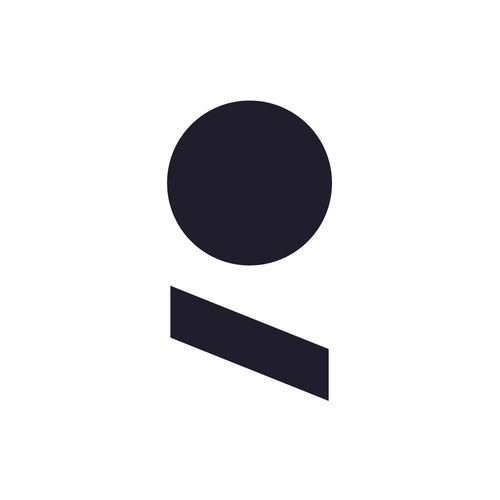

Furhat Robotics
Oct 2025 – Apr 2026 · Stockholm, Sweden · Part-time
Bachelor’s Thesis — Prototyping & Concepting
- Redesigned the mechanical implementation of MEMS microphones, including mounting, isolation, and acoustic channels.
- Built an automated speech-recognition evaluation and achieved a 9.3% reduction in mean word error rate.
Apr – Sep 2025 · Stockholm, Sweden
Prototyping & Concepting Intern
- Developed hardware and software concepts for social robots within the prototyping team.
- Worked on projects including the Furpack backpack and a 360-degree mechanism for Furhat.